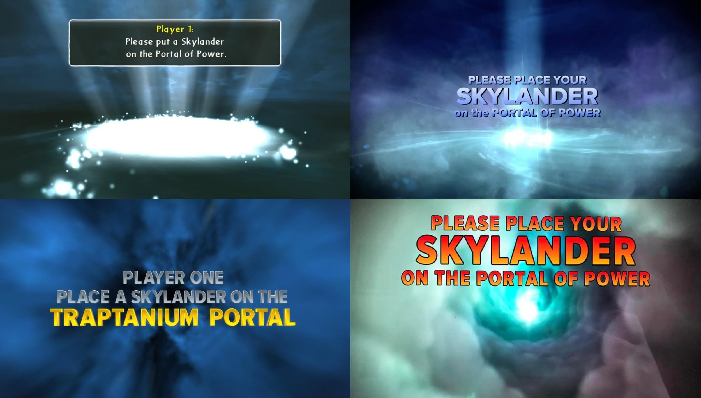
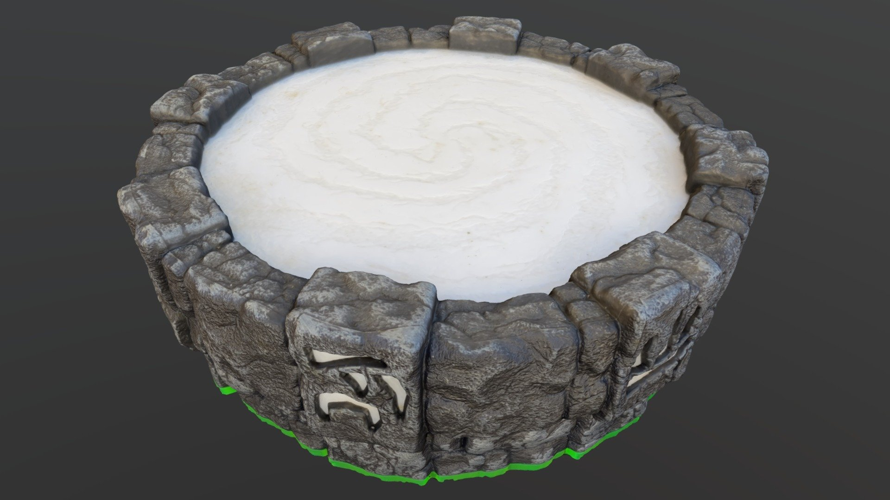
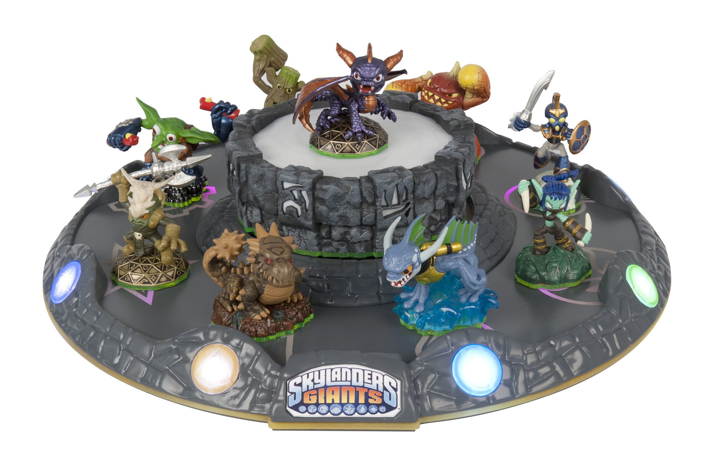
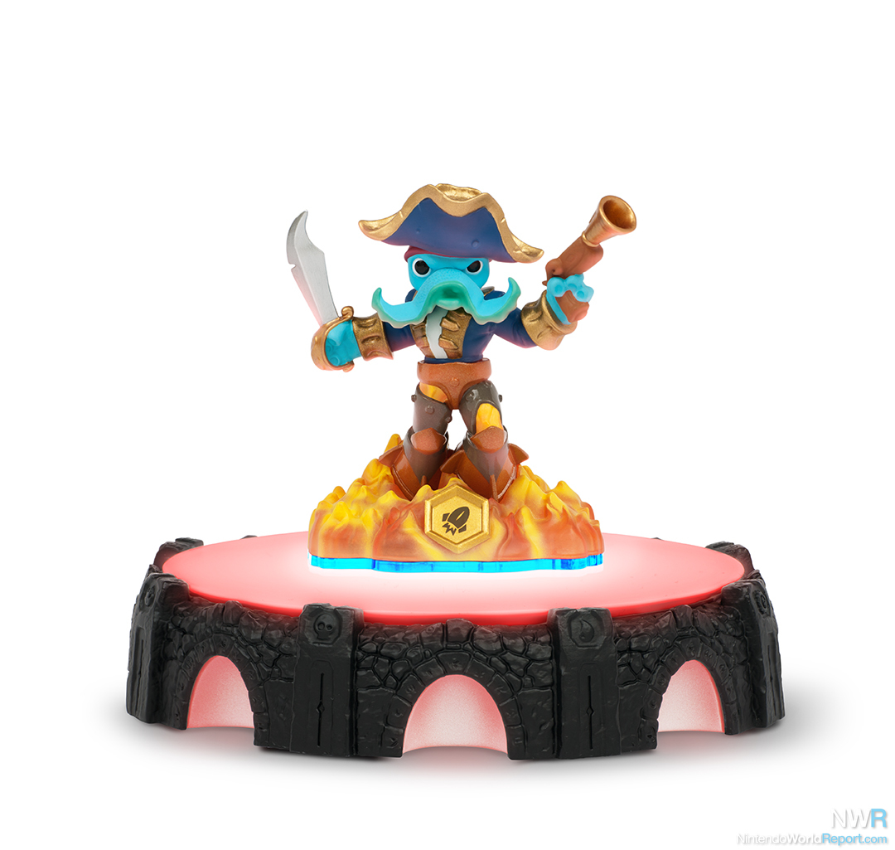

Portal Master is a term used to refer to the player in Skylanders. This is because, as the player, it is up to you to use the physical toys to "summon" the characters in the game. To do this, a Skylander toy must be placed upon an included accessory, the Portal of Power.

Portal Master is a term used to refer to the player in Skylanders. This is because, as the player, it is up to you to use the physical toys to "summon" the characters in the game. To do this, a Skylander toy must be placed upon an included accessory, the Portal of Power. Then the question becomes, what skylander to use?

Starting with the first game, every Skylander is assigned an elemental type which heavily dictates how useful a given figure will be in certain areas. For example, a level with lots of fire and lava would benefit from a fire type Skylander. Plus only water and flying Skylanders can traverse bodies of water. Later games would add additional categories that I endearingly refer to as gimmicks.

Gimmicks began all the way back in the second game released for the series, Skylanders: Giants. If you couldn't guess, the gimmick of that game were the giant figures which were both bigger toys in person and much stronger characters when used in-game. Of course the first game didn't really need a gimmick as the toys-to-life feature was the gimmick. Later games would include figures that could swap top and bottom pieces, figures with special crystal weapons, figures with paired vehicles, up to the final games gimmick which was allowing the player to make their own Skylander!
